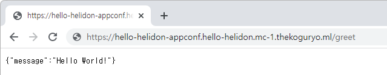
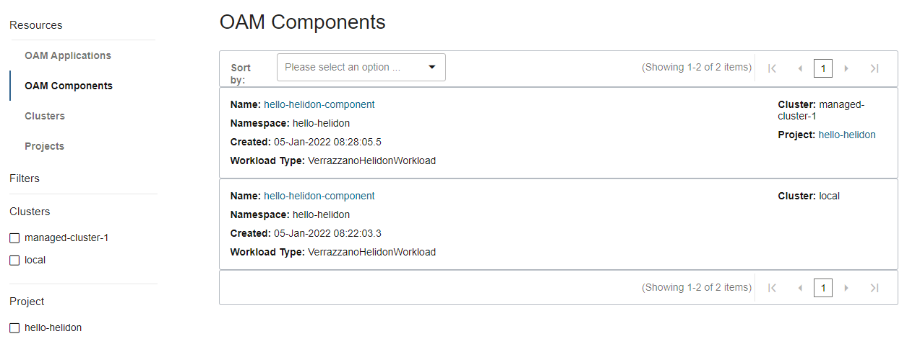
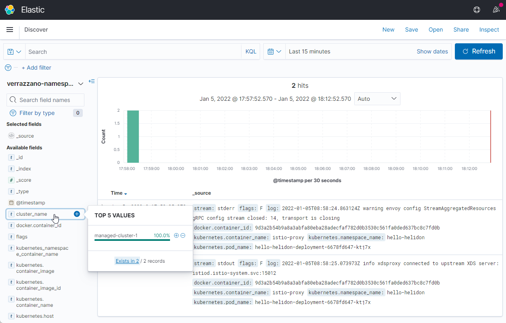
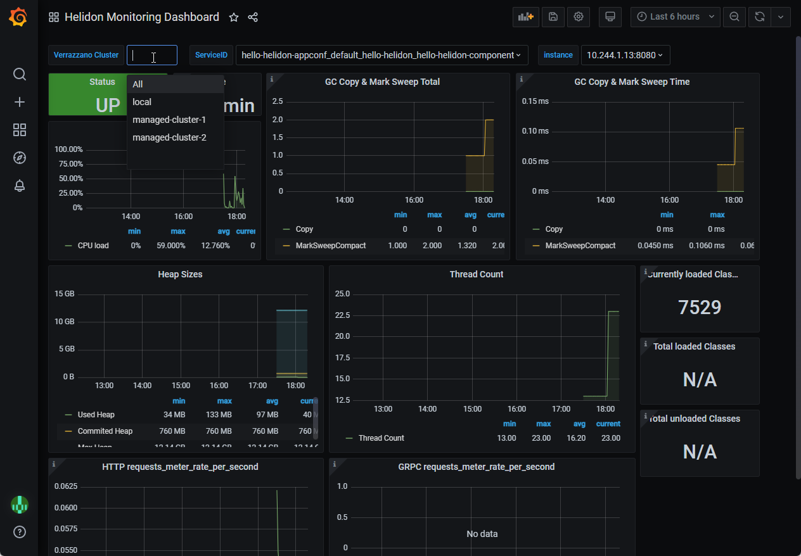

6.4 Multicluster에 애플리케이션 배포하기
Helidon 예제 애플리케이션 배포하기
Helidon 프레임워크를 사용해서 개발한 Java 애플리케이션을, Open Application Model을 사용해서 Verrazzano에서 배포하는 것을 앞서 확인하였습니다. 단일 Kubernetes 클러스터에 대해서 배포하는 것을 확인했습니다.
이번에는 멀티 클러스터 환경에서 배포하는 것을 확인해 보겠습니다. Verrazzano가 배포된 3개의 클러스터를 기준으로 확인해 봅니다.
- Admin Cluster
- admin-cluster
- Managed Cluster
- managed-cluster-1
- managed-cluster-2
애플리케이션 배포
-
namespace 생성
-
단일 클러스터 기준 (참고)
앞서 예제에서 배포할 namespace를 생성하고 라벨을 사전에 설정해야 했습니다.
kubectl create namespace hello-helidon kubectl label namespace hello-helidon verrazzano-managed=true istio-injection=enabled -
멀티 클러스터를 위해 namespace를 생성(즉, Project를 생성)
- 애플리케이션이 배포될 멀티클러스터에 걸쳐있는 namespace를 관리하기 위해서 VerrazzanoProject 유형을 제공합니다. Admin Cluster에 다음 명령을 수행하면, Admin Cluster 및 대상 Managed Cluster에 해당 namespace가 생성됩니다.
- 아래 설정을 admin-cluster에 배포합니다.
apiVersion: clusters.verrazzano.io/v1alpha1 kind: VerrazzanoProject metadata: name: hello-helidon namespace: verrazzano-mc spec: template: namespaces: - metadata: name: hello-helidon placement: clusters: - name: managed-cluster-1 - name: managed-cluster-2 -
결과 확인
VerrazzanoProject 만들면 아래와 같이 대상 클러스터들에 namespace가 만들어지고 자동으로 라벨이 부여됩니다.
[opc@bastion-host ~ ( )]$ kubectl config use-context admin-cluster Switched to context "admin-cluster". [opc@bastion-host ~ (⎈ |admin-cluster:default)]$ kubectl get ns hello-helidon --show-labels NAME STATUS AGE LABELS hello-helidon Active 4m50s istio-injection=enabled,verrazzano-managed=true [opc@bastion-host ~ (⎈ |admin-cluster:default)]$ kubectl config use-context managed-cluster-1 Switched to context "managed-cluster-1". [opc@bastion-host ~ (⎈ |managed-cluster-1:default)]$ kubectl get ns hello-helidon --show-labels NAME STATUS AGE LABELS hello-helidon Active 4m50s istio-injection=enabled,verrazzano-managed=true [opc@bastion-host ~ (⎈ |managed-cluster-1:default)]$ kubectl config use-context managed-cluster-2 Switched to context "managed-cluster-2". [opc@bastion-host ~ (⎈ |managed-cluster-2:default)]$ kubectl get ns hello-helidon --show-labels NAME STATUS AGE LABELS hello-helidon Active 5m3s istio-injection=enabled,verrazzano-managed=true
-
-
Component 배포
단일 클러스터, 멀티 클러스터 차이가 없습니다. 설정 파일은 이전과 동일하고 대신 admin-cluster에 배포합니다.
kubectl apply -f https://raw.githubusercontent.com/verrazzano/verrazzano/v1.1.0/examples/hello-helidon/hello-helidon-comp.yaml -
Application Configuration 배포
-
멀티 클러스터 배포를 위한 YAML 예시
멀티 클러스터 배포시에는 MultiClusterApplicationConfiguration 유형을 사용합니다. 기존 ApplicationConfiguration에서 정의된 부분이 MultiClusterApplicationConfiguration의 하위 spec으로 들어간 것을 알 수 있습니다. 또한 멀티클러스터 배포를 위한 placement 구문이 추가됩니다.
apiVersion: clusters.verrazzano.io/v1alpha1 kind: MultiClusterApplicationConfiguration metadata: name: hello-helidon-appconf namespace: hello-helidon spec: template: metadata: annotations: version: v1.0.0 description: "Hello Helidon application" spec: components: - componentName: hello-helidon-component traits: ... placement: clusters: - name: managed-cluster-1 -
멀티 클러스터 배포용 Application Configuration을 각자 placement에 맞게 수정하여 배포합니다.
wget https://raw.githubusercontent.com/verrazzano/verrazzano/v1.1.0/examples/multicluster/hello-helidon/mc-hello-helidon-app.yaml # placement 수정 kubectl apply -f mc-hello-helidon-app.yaml-
필요하면 이전 단일클러스터 배포시 사용한 아래 파일과 직접 비교해봅니다.
https://raw.githubusercontent.com/verrazzano/verrazzano/v1.1.0/examples/hello-helidon/hello-helidon-app.yaml
-
-
-
배포결과
admin-cluster에 Componet와 Application을 배포하면, 아래 결과에서 보듯이 placement로 지정한 클러스터에 배포되는 것을 알 수 있습니다.
[opc@bastion-host t (⎈ |admin-cluster:default)]$ kubectl apply -f https://raw.githubusercontent.com/verrazzano/verrazzano/v1.1.0/examples/hello-helidon/hello-helidon-comp.yaml component.core.oam.dev/hello-helidon-component created [opc@bastion-host t (⎈ |admin-cluster:default)]$ kubectl apply -f mc-hello-helidon-app.yaml multiclusterapplicationconfiguration.clusters.verrazzano.io/hello-helidon-appconf created [opc@bastion-host t (⎈ |admin-cluster:default)]$ kubectl get multiclusterapplicationconfigurations,component,deployment -n hello-helidon NAME AGE multiclusterapplicationconfiguration.clusters.verrazzano.io/hello-helidon-appconf 11m NAME WORKLOAD-KIND AGE component.core.oam.dev/hello-helidon-component VerrazzanoHelidonWorkload 17m [opc@bastion-host t (⎈ |admin-cluster:default)]$ kubectl config use-context managed-cluster-1 Switched to context "managed-cluster-1". [opc@bastion-host t (⎈ |managed-cluster-1:default)]$ kubectl get multiclusterapplicationconfigurations,component,deployment -n hello-helidon NAME AGE multiclusterapplicationconfiguration.clusters.verrazzano.io/hello-helidon-appconf 11m NAME WORKLOAD-KIND AGE component.core.oam.dev/hello-helidon-component VerrazzanoHelidonWorkload 11m NAME READY UP-TO-DATE AVAILABLE AGE deployment.apps/hello-helidon-deployment 1/1 1 1 11m [opc@bastion-host t (⎈ |managed-cluster-1:default)]$ kubectl config use-context managed-cluster-2 Switched to context "managed-cluster-2". [opc@bastion-host t (⎈ |managed-cluster-2:default)]$ kubectl get multiclusterapplicationconfigurations,component,deployment -n hello-helidon No resources found in hello-helidon namespace. -
배포된 앱의 istio를 통해 등록된 ingress DNS 확인
kubectl get gateway hello-helidon-hello-helidon-appconf-gw \ -n hello-helidon \ -o jsonpath='{.spec.servers[0].hosts[0]}' -
실행예시
$ kubectl get gateway hello-helidon-hello-helidon-appconf-gw \ > -n hello-helidon \ > -o jsonpath='{.spec.servers[0].hosts[0]}' hello-helidon-appconf.hello-helidon.mc-1.thekoguryo.ml -
애플리케이션 테스트
확인된 https://{ingress DNS 주소}/greet 주소로 정상 호출되는 것을 알 수 있습니다.

모니터링
Verrazzano 콘솔
-
Verrazzano Console에 로그인합니다.
예, https://verrazzano.myenv.thekoguryo.ml
- 접속 유저: verrazzano
- 암호: 설치시 초기화한 암호
-
왼쪽 Resources 항목에서 Application과 Component 항목에서 배포된 앱 정보를 확인할 수 있습니다.

로그 모니터링(Elasticsearch / Kibana)
-
Verrazzano 콘솔에서 Kibana 링크를 클릭합니다. SSO 구성이 되어 추가 로그인은 필요없습니다.
-
단일 클러스터와 배포시와 동일한 방법으로 verrazzano-namespace-hello-helidon 네임스페이스로 인덱스 패턴을 생성합니다.
-
생성한 인덱스 패턴에 대해 수집된 로그, 대상 namespace 상의 전체 수집된 로그가 보입니다. admin-cluster는 등록된 Managed Cluster 모두의 로그를 수집합니다. 앞서 배포된 앱는 managed-cluster-1에만 배포했기 때문에 실제 수집된 로그도 동일함을 알수 있습니다.

메트릭 모니터링(Prometheus / Grafana)
-
Verrazzano 콘솔에서 Grafana 링크를 클릭합니다. SSO 구성이 되어 추가 로그인은 필요없습니다.
-
기본 제공하고 있는 대쉬보드 중에 Helidon 대쉬보드를 선택합니다.
-
Helidon 대쉬보드에서 앞서 배포한 앱의 상태를 확인할 수 있습니다. 모든 클러스터에 수집된 메트릭을 볼 수 있으면, 실제 managed-cluster-1에 있기 때문에 수집된 데이터 기준으로 보이게 됩니다.

** 이 글은 개인으로서, 개인의 시간을 할애하여 작성된 글입니다. 글의 내용에 오류가 있을 수 있으며, 글 속의 의견은 개인적인 의견입니다. **